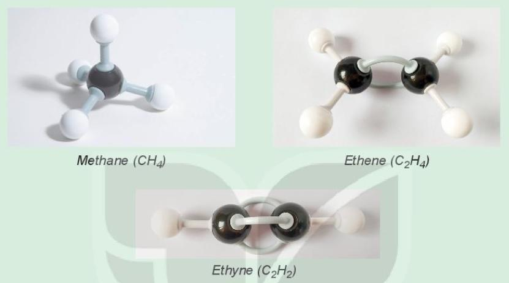

โครงสร้างและพันธะของสารประกอบอินทรีย์
สารประกอบอินทรีย์มีธาตุคาร์บอนเป็นองค์ประกอบสำคัญ โดยคาร์บอนมีเลขอะตอมเท่ากับ 6 และสามารถสร้างพันธะโคเวเลนต์กับอะตอมอื่นได้หลายรูปแบบ คาร์บอนมีเวเลนซ์อิเล็กตรอน 4 ตัว จึงสามารถสร้างพันธะได้ทั้งหมด 4 พันธะ ทำให้เกิดโครงสร้างของสารอินทรีย์ที่มีความหลากหลาย
พันธะที่พบในสารประกอบอินทรีย์ ได้แก่ พันธะเดี่ยว พันธะคู่ และพันธะสาม พันธะเดี่ยวเกิดจากการใช้อิเล็กตรอนร่วมกัน 1 คู่ พันธะคู่ใช้อิเล็กตรอนร่วมกัน 2 คู่ และพันธะสามใช้อิเล็กตรอนร่วมกัน 3 คู่ ตัวอย่างเช่น มีเทน (CH₄) มีพันธะเดี่ยว เอทีน (C₂H₄) มีพันธะคู่ และเอไทน์ (C₂H₂) มีพันธะสาม
นอกจากนั้น คาร์บอนยังสามารถเชื่อมต่อกันเป็นสายโซ่ตรง สายโซ่กิ่ง และโครงสร้างวงแหวนได้ โครงสร้างที่แตกต่างกันอาจทำให้สารมีสมบัติทางกายภาพและทางเคมีแตกต่างกัน แม้จะมีจำนวนอะตอมเท่ากันก็ตาม ดังนั้น การศึกษาโครงสร้างและพันธะจึงเป็นพื้นฐานสำคัญในการทำความเข้าใจสารประกอบอินทรีย์